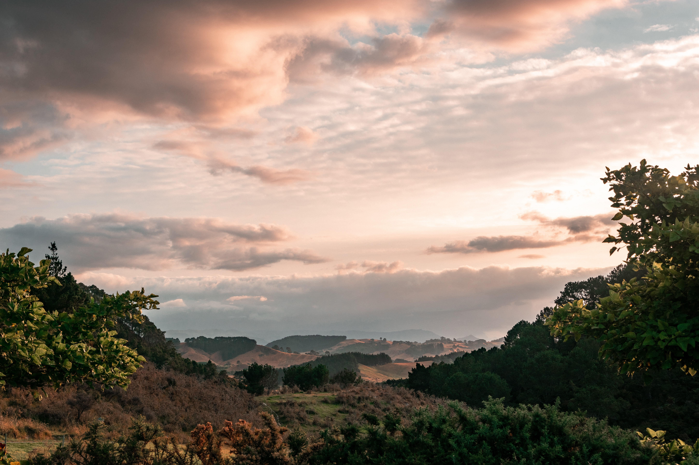

Wanneer je de ideale roadtrip wilt uitwerken dan is het belangrijk om te bedenken wat voor soort vakantie je wilt ontwikkelen. Ben je op zoek naar een culturele of avontuurlijke roadtrip? Of toch een culinaire roadtrip? Wil ik een
roadtrip dichtbij of verder weg? De keuze is reuze. Bij Roadtrip Worldwide proberen wij met je mee te denken. Op onze site vind je inspiratie voor verschillende landen en soorten reizen.
Nog vragen? Stel ze gerust via het contactformulier en dan proberen wij er samen uit te komen!
